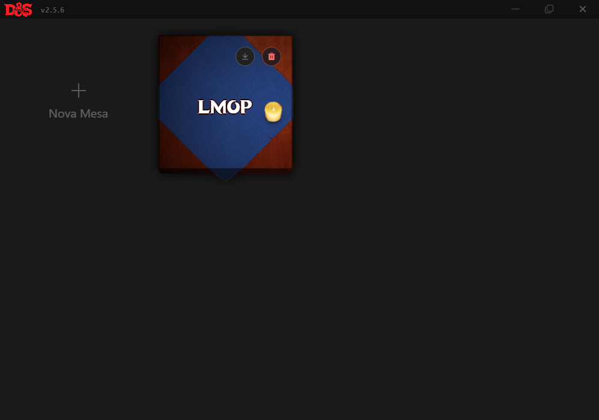
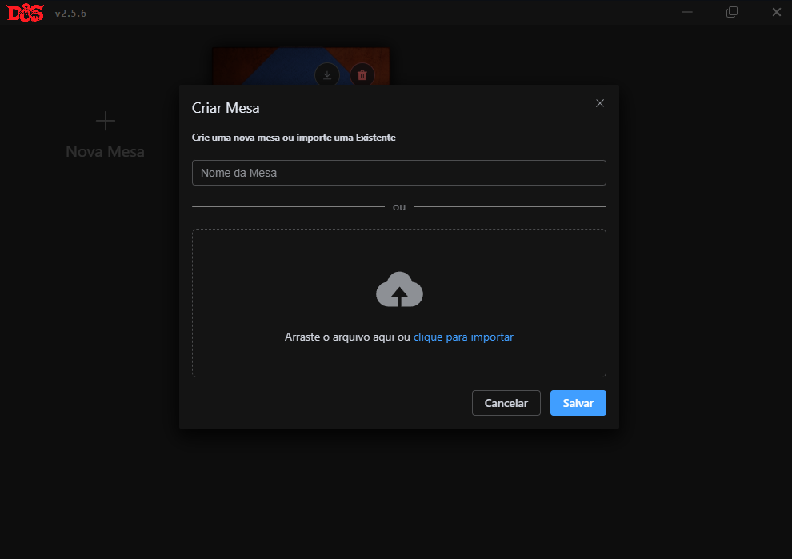
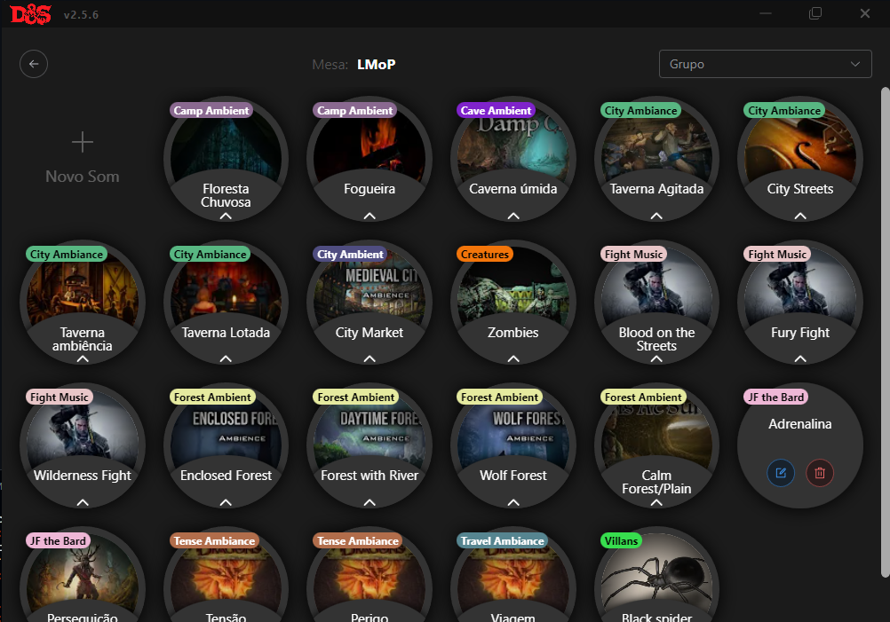
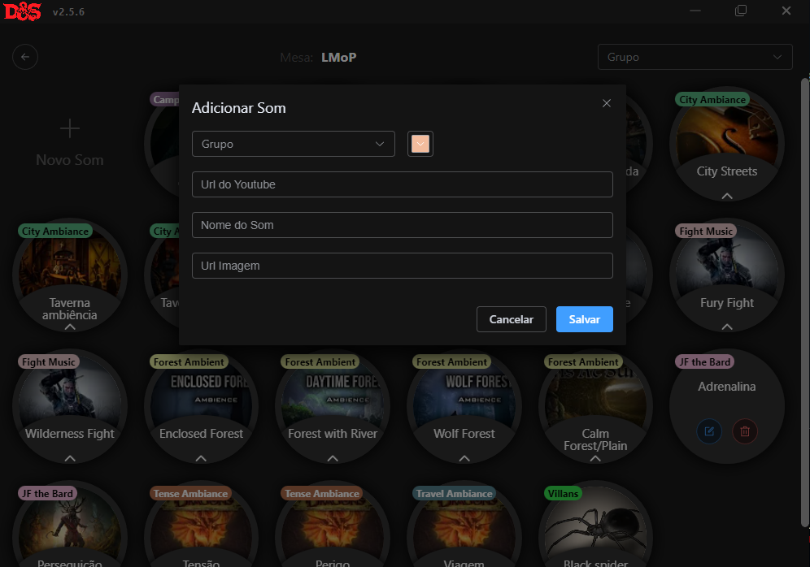
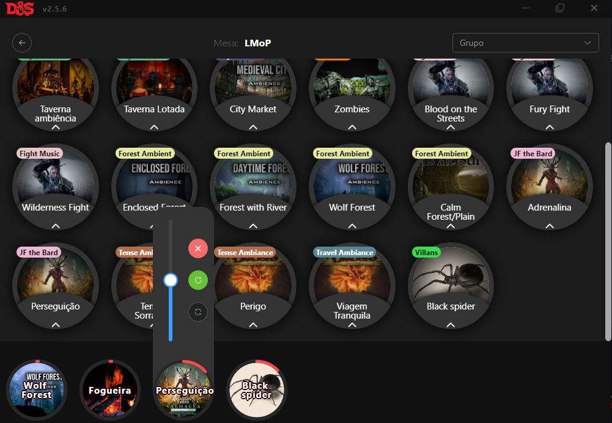

Tentando fazer sua mesa de RPG mais imersiva!
A proposta da mesa é ser um aplicativo para adicionar sons pela própria URL do YouTube e conseguir utilizá-los de forma rápida dentro de uma sessão de RPG, ajudando o mestre a criar mais imersão no jogo.
Crie mesas e compartilhe com outros mestres.


Adicione seus audios e efeitos sonoros preferidos.


Mixe e crie cenários para aumentar a imersão do seu jogo.

Baixe a última versão do aplicativo Dungeons & Sounds 2.5.5
O aplicativo é de código aberto, nos ajude melhorar-lo no nosso Github